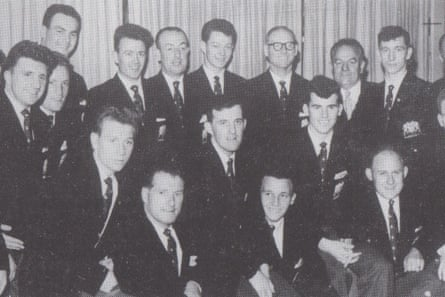
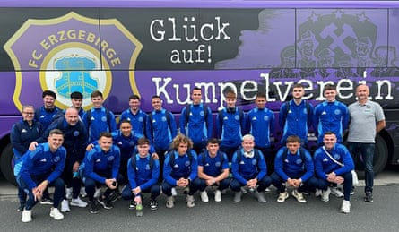

I t has taken 65 years, the end of the cold war and some deft social media networking for Glenavon Football Club to finally complete their tie against the former wunderkinds of East Germany, Erzgebirge Aue.
The two teams will meet at the Northern Ireland club’s Mourneview Park stadium in Lurgan, County Armagh, on Saturday to play the second leg of a tie originally scheduled for 1960 and 1961.
About a thousand fans from Germany, including a motorcade of bikers, are expected to join Glenavon fans for the friendly, a mix of history, sentiment and unfinished business. Both clubs had enjoyed domestic success in the 50s – for Glenavon in particular a golden, unrepeated era – and qualified for the 1960-61 European Cup.
However, political tension between the west and the Soviet bloc meant the Irish League champions could not obtain visas to play the German club, then known as Wismut, at their stadium in Saxony, about 200 miles south of Berlin, and behind the Iron Curtain. Nor could the East German league champions obtain visas for Northern Ireland. Uefa allowed home and away legs to be played in neutral countries but Glenavon could not afford that and the games were scrapped.
After the Berlin wall fell in 1989 and Germany reunited, Wismut was renamed Erzgebirge Aue and hovered around the third tier of the Bundesliga.
“It had been confined to history and forgotten about,” Glenn Emerson, the chairman of Glenavon, said on Thursday. “Then Adam and a couple of guys had this idea: ‘What if?’ That’s how it all started.”
The Glenavon team from 1960 pose for a photo.Photograph: Glenavon FC
Emerson was referring Adam Carson, Glenavon’s supporter liaison officer, who about four years ago mused online about what would have happened had the teams met.
“A couple of their supporters actually picked up on the tweets and stuff that I had been sending out,” Carson told the Belfast Telegraph . “And they got in touch with me and we just kept talking, and eventually two of the supporters I had been chatting to actually came over here to a Glenavon match. I showed them about, took them to another Irish league game the following day, took them into town for an Ulster fry.”
The fans stayed in touch, leading to the clubs making official contact and agreeing to belated home and away ties. The Northern Ireland team played the Germans at Erzgebirgsstadion, their stadium in Aue-Bad Schlema, last July. The visitors lost 5–0 but their fans savoured the trip.
“The welcome we got when we went over there was second to none,” said Carson. “I always say to people, if we were lucky enough to play in Europe every single year, from now to the end of time, we’ll never get another welcome like the way we did last year at Aue.”
The Glenavon team in Aue-Bad Schlema before last year’s match, which they lost 5-0.Photograph: Glenavon FC
Glenavon plan to return the warmth this weekend when the Germans, including an estimated 300 members of the Violent Bikers – the club’s motorbike supporters’ club – arrive in Lurgan. There will be a parade through the town – and introductions to Buckfast, also known as Lurgan champagne – before kick-off at 2pm .
A handful of players from the 1960-61 squad are still alive, said Emerson. “We’re hoping to get at least one of them down for the game.”